features.11 unit 115: dotted (texture, 0.257253); ball_pit-s (scene, 0.028138); lid (part, 0.026635); toilet (object, 0.025155); ceramic (material, 0.024542); pink-c (color, 0.009165)

features.11 unit 249: wheel (part, 0.191512); paisley (texture, 0.125726); bicycle (object, 0.121156); food (material, 0.022326); labyrinth-indoor-s (scene, 0.021282); yellow-c (color, 0.007134)
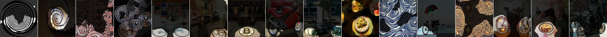
features.11 unit 16: dotted (texture, 0.182915); ball_pit-s (scene, 0.057197); ball (object, 0.052142); muzzle (part, 0.031004); food (material, 0.009990); red-c (color, 0.009533)
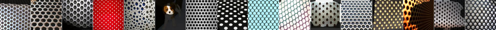
features.11 unit 256: striped (texture, 0.180695); skyscraper (object, 0.023992); crosswalk (part, 0.020678); skyscraper-s (scene, 0.014606); white-c (color, 0.007158); fabric (material, 0.004385)
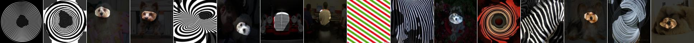
features.11 unit 131: cat (object, 0.168604); head (part, 0.117352); striped (texture, 0.018899); fur (material, 0.012340); black-c (color, 0.005890); flood-s (scene, 0.005061)
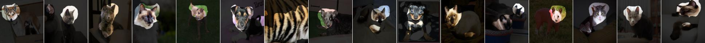
features.11 unit 36: cobwebbed (texture, 0.168062); bicycle (object, 0.035246); wheel (part, 0.030302); atrium-public-s (scene, 0.012233); black-c (color, 0.008066); metal (material, 0.006297)
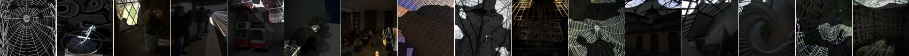
features.11 unit 133: perforated (texture, 0.150731); skyscraper (object, 0.048603); skyscraper-s (scene, 0.030443); roof (part, 0.009951); tile (material, 0.008422); white-c (color, 0.006201)
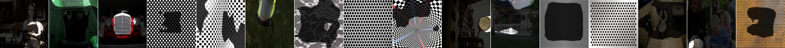
features.11 unit 188: spiralled (texture, 0.141080); ceramic (material, 0.033574); wheel (part, 0.028972); jacuzzi-outdoor-s (scene, 0.022226); bicycle (object, 0.018140); orange-c (color, 0.005367)
features.11 unit 42: wheel (part, 0.137943); bicycle (object, 0.072854); spiralled (texture, 0.037143); food (material, 0.015383); manhole-s (scene, 0.012125); yellow-c (color, 0.005218)
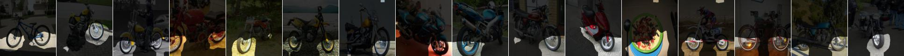
features.11 unit 116: cat (object, 0.130817); ear (part, 0.074551); matted (texture, 0.032064); fur (material, 0.007846); abbey-s (scene, 0.006430); red-c (color, 0.005954)
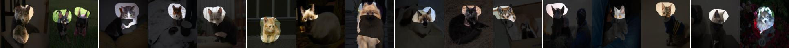
features.11 unit 177: dog (object, 0.127203); head (part, 0.085116); matted (texture, 0.028406); fur (material, 0.007696); pasture-s (scene, 0.007629); white-c (color, 0.006316)
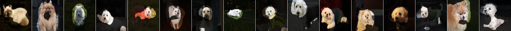
features.11 unit 236: waffled (texture, 0.126576); dog (object, 0.073738); torso (part, 0.044935); food (material, 0.035997); bakery-shop-s (scene, 0.019451); orange-c (color, 0.017112)
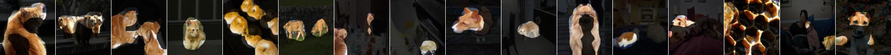
features.11 unit 197: cat (object, 0.125608); torso (part, 0.094963); matted (texture, 0.078001); hut-s (scene, 0.012847); fur (material, 0.010396); brown-c (color, 0.006509)
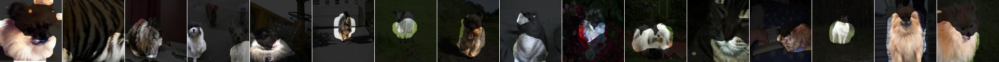
features.11 unit 110: dog (object, 0.125302); torso (part, 0.070567); waterfall-cascade-s (scene, 0.011716); matted (texture, 0.010499); white-c (color, 0.008035); fur (material, 0.007908)
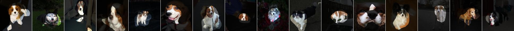
features.11 unit 96: grass (object, 0.124881); green-c (color, 0.034022); pasture-s (scene, 0.026578); (texture, 0.008982); food (material, 0.004034); wheel (part, 0.003763)
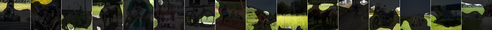
features.11 unit 230: striped (texture, 0.124075); cat (object, 0.032413); head (part, 0.020545); food (material, 0.014547); escalator-indoor-s (scene, 0.009700); white-c (color, 0.007673)
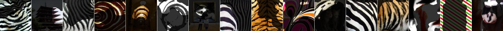
features.11 unit 169: cracked (texture, 0.120621); food (material, 0.032842); rock (object, 0.023850); kasbah-s (scene, 0.013585); yellow-c (color, 0.012129); drawer (part, 0.010658)
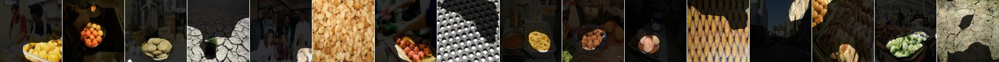
features.11 unit 128: car (object, 0.119871); wheel (part, 0.103332); auto_showroom-s (scene, 0.017519); black-c (color, 0.008569); freckled (texture, 0.006462); glass (material, 0.004993)
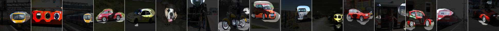
features.11 unit 72: dotted (texture, 0.119741); head (part, 0.026407); dog (object, 0.020378); laundromat-s (scene, 0.009257); pink-c (color, 0.007702); tile (material, 0.003421)
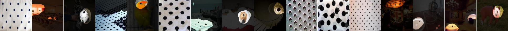
features.11 unit 109: banded (texture, 0.114379); curtain (object, 0.018344); closet-s (scene, 0.009279); head (part, 0.008306); orange-c (color, 0.007936); wood (material, 0.006683)
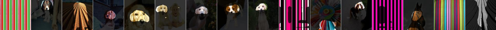
features.11 unit 64: wheel (part, 0.113850); motorbike (object, 0.063920); paisley (texture, 0.017016); auto_showroom-s (scene, 0.014326); food (material, 0.008223); red-c (color, 0.006335)
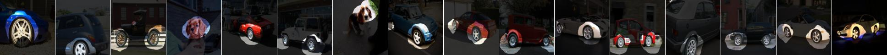
features.11 unit 160: dotted (texture, 0.111209); wheel (part, 0.063534); laundromat-s (scene, 0.039504); motorbike (object, 0.035597); ceramic (material, 0.010310); black-c (color, 0.006275)
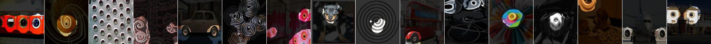
features.11 unit 119: honeycombed (texture, 0.109791); auditorium-s (scene, 0.029018); seat (object, 0.013583); orange-c (color, 0.010168); pane (part, 0.007798); food (material, 0.004171)
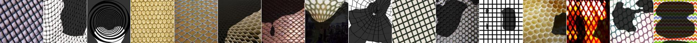
features.11 unit 60: freckled (texture, 0.109608); head (part, 0.097441); person (object, 0.048818); pink-c (color, 0.015960); food (material, 0.013642); ball_pit-s (scene, 0.007154)

features.11 unit 57: chequered (texture, 0.109284); bookstore-s (scene, 0.032416); arm (part, 0.022374); book (object, 0.022339); pink-c (color, 0.011908); skin (material, 0.009621)
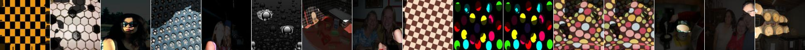
features.11 unit 24: zigzagged (texture, 0.106070); wheel (part, 0.035141); bicycle (object, 0.034343); airport_terminal-s (scene, 0.016434); white-c (color, 0.006375); carpet (material, 0.005500)
features.11 unit 79: striped (texture, 0.105949); wheel (part, 0.082505); bicycle (object, 0.045658); closet-s (scene, 0.014789); metal (material, 0.007729); black-c (color, 0.005990)
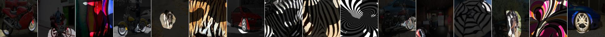
features.11 unit 112: screen (part, 0.101776); tvmonitor (object, 0.077837); home_theater-s (scene, 0.019065); glass (material, 0.016802); spiralled (texture, 0.010846); blue-c (color, 0.009213)
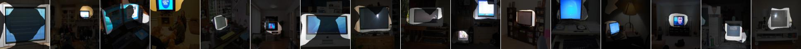
features.11 unit 194: dog (object, 0.099740); head (part, 0.068154); matted (texture, 0.016539); fur (material, 0.015004); black-c (color, 0.011671); pasture-s (scene, 0.005447)
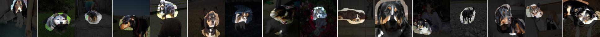
features.11 unit 120: grass (object, 0.099354); green-c (color, 0.043685); park-s (scene, 0.021332); veined (texture, 0.016475); food (material, 0.010331); wheel (part, 0.002748)
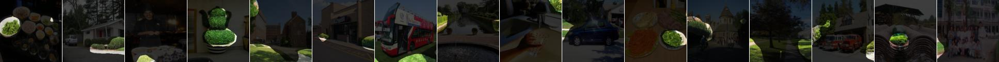
features.11 unit 246: wheel (part, 0.098437); zigzagged (texture, 0.050981); motorbike (object, 0.041745); red-c (color, 0.010094); cockpit-s (scene, 0.007466); glass (material, 0.007309)
features.11 unit 25: paisley (texture, 0.098001); flower (object, 0.040118); florist_shop-indoor-s (scene, 0.020816); purple-c (color, 0.014170); food (material, 0.007566); pane (part, 0.006214)
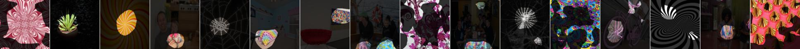
features.11 unit 166: water (object, 0.096814); cobwebbed (texture, 0.040772); coast-s (scene, 0.023498); blue-c (color, 0.014618); tile (material, 0.003073); crosswalk (part, 0.001347)

features.11 unit 124: grass (object, 0.094945); veined (texture, 0.059038); green-c (color, 0.040063); fairway-s (scene, 0.021099); tile (material, 0.004413); wheel (part, 0.002006)
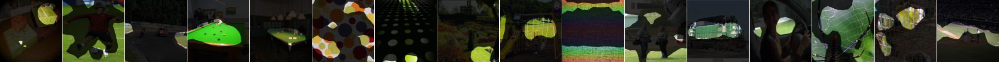
features.11 unit 104: grass (object, 0.092222); porous (texture, 0.035550); pasture-s (scene, 0.025807); green-c (color, 0.019065); carpet (material, 0.015543); wheel (part, 0.008006)
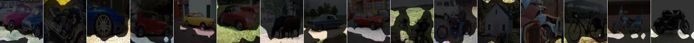
features.11 unit 225: hair (part, 0.091499); dog (object, 0.076259); matted (texture, 0.029271); sandbox-s (scene, 0.007871); brown-c (color, 0.007560); fur (material, 0.006906)
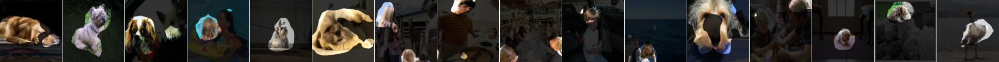
features.11 unit 206: chequered (texture, 0.090870); archive-s (scene, 0.013816); bicycle (object, 0.010358); wing (part, 0.008785); white-c (color, 0.005878); metal (material, 0.004230)
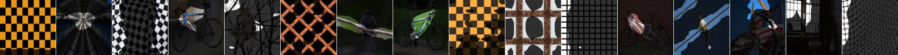
features.11 unit 129: cat (object, 0.083418); head (part, 0.077649); matted (texture, 0.037289); mountain_snowy-s (scene, 0.011840); fur (material, 0.010082); black-c (color, 0.007241)
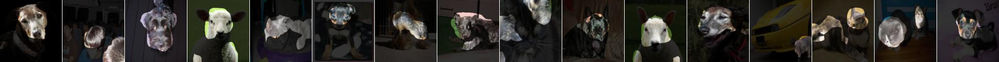
features.11 unit 161: zigzagged (texture, 0.083194); body (part, 0.037352); signboard (object, 0.024504); shopfront-s (scene, 0.011825); red-c (color, 0.007547); fabric (material, 0.003290)
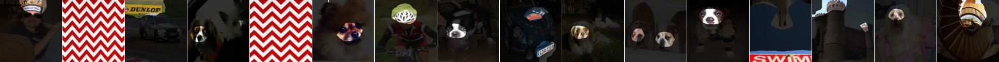
features.11 unit 137: wheel (part, 0.081460); bicycle (object, 0.061896); striped (texture, 0.021834); office-s (scene, 0.008716); carpet (material, 0.006911); black-c (color, 0.005841)
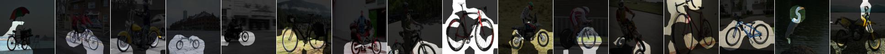
features.11 unit 100: water (object, 0.080874); coast-s (scene, 0.017970); cobwebbed (texture, 0.012343); head (part, 0.011936); blue-c (color, 0.010710); tile (material, 0.009741)
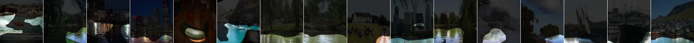
features.11 unit 67: dog (object, 0.080006); torso (part, 0.079275); freckled (texture, 0.064411); fur (material, 0.010621); pasture-s (scene, 0.009841); pink-c (color, 0.008582)
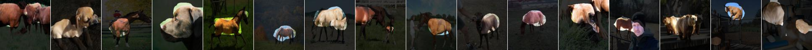
features.11 unit 31: horse (object, 0.079479); muzzle (part, 0.057312); freckled (texture, 0.015734); pasture-s (scene, 0.007443); orange-c (color, 0.006737); fur (material, 0.006494)
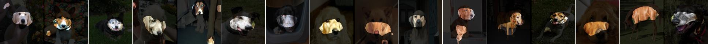
features.11 unit 140: red-c (color, 0.078998); bus (object, 0.029248); banded (texture, 0.024249); body (part, 0.014133); fabric (material, 0.013704); ball_pit-s (scene, 0.012343)
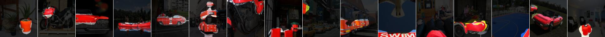
features.11 unit 65: wheel (part, 0.078180); car (object, 0.072988); black-c (color, 0.012977); street-s (scene, 0.012838); fur (material, 0.009286); swirly (texture, 0.008531)
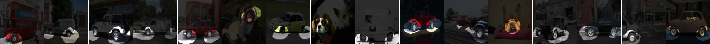
features.11 unit 185: person (object, 0.077157); head (part, 0.074672); freckled (texture, 0.034676); pink-c (color, 0.027692); skin (material, 0.021419); cockpit-s (scene, 0.012418)
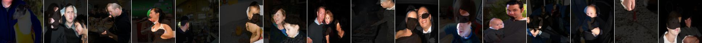
features.11 unit 226: frilly (texture, 0.076771); pink-c (color, 0.046675); person (object, 0.018118); head (part, 0.016866); fabric (material, 0.011847); childs_room-s (scene, 0.011111)
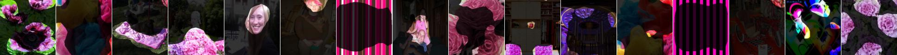
features.11 unit 216: knitted (texture, 0.075598); sheep (object, 0.027818); purple-c (color, 0.020550); food (material, 0.013736); torso (part, 0.011658); hut-s (scene, 0.011409)
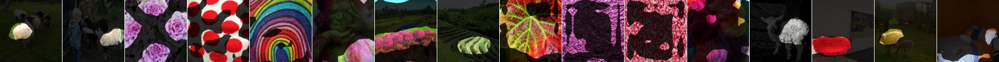
features.11 unit 20: freckled (texture, 0.075187); sheep (object, 0.024246); food (material, 0.023838); muzzle (part, 0.020135); orange-c (color, 0.009497); wine_cellar-barrel_storage-s (scene, 0.009017)
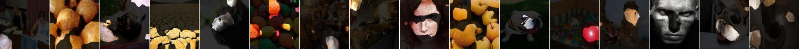
features.11 unit 86: waffled (texture, 0.074865); cow (object, 0.042038); torso (part, 0.033542); food (material, 0.030102); orange-c (color, 0.017172); living_room-s (scene, 0.009091)
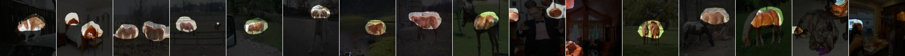
features.11 unit 102: plant (object, 0.073940); frilly (texture, 0.033158); green-c (color, 0.031196); forest-broadleaf-s (scene, 0.021941); food (material, 0.016695); pot (part, 0.002545)
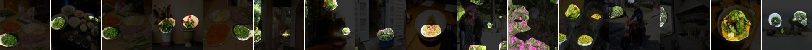
features.11 unit 228: polka-dotted (texture, 0.073861); muzzle (part, 0.019750); dog (object, 0.017059); kitchen-s (scene, 0.008058); yellow-c (color, 0.006712); paper (material, 0.003951)
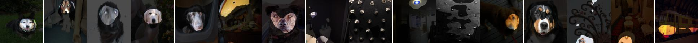
features.11 unit 125: person (object, 0.073775); hair (part, 0.070687); witness_stand-s (scene, 0.017673); pink-c (color, 0.014936); fabric (material, 0.007221); freckled (texture, 0.002599)
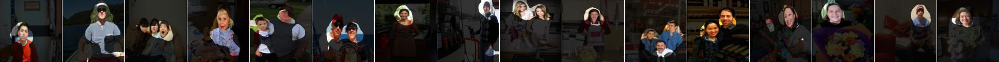
features.11 unit 2: grid (texture, 0.072142); book (object, 0.042996); bookstore-s (scene, 0.038709); pane (part, 0.012084); glass (material, 0.009444); pink-c (color, 0.006850)
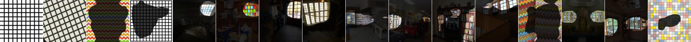
features.11 unit 90: perforated (texture, 0.071883); food (material, 0.028639); auditorium-s (scene, 0.019972); seat (object, 0.016152); red-c (color, 0.010929); torso (part, 0.003459)
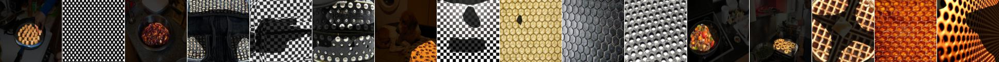
features.11 unit 163: sky (object, 0.071756); blue-c (color, 0.037811); clouds (part, 0.018492); lighthouse-s (scene, 0.018101); (texture, 0.009444); glass (material, 0.000532)
features.11 unit 27: spiralled (texture, 0.070419); labyrinth-indoor-s (scene, 0.019826); bed (object, 0.016979); torso (part, 0.014445); fabric (material, 0.012972); pink-c (color, 0.008270)
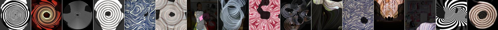
features.11 unit 164: studded (texture, 0.069752); dog (object, 0.029045); muzzle (part, 0.028229); casino-indoor-s (scene, 0.018181); food (material, 0.013937); orange-c (color, 0.006996)

features.11 unit 30: car (object, 0.068995); windshield (part, 0.015697); metal (material, 0.013953); crystalline (texture, 0.009439); auto_showroom-s (scene, 0.009259); blue-c (color, 0.008604)
features.11 unit 138: car (object, 0.067910); wheel (part, 0.022927); street-s (scene, 0.010957); dotted (texture, 0.010476); blue-c (color, 0.008024); plastic-opaque (material, 0.006205)
features.11 unit 220: perforated (texture, 0.065791); anechoic_chamber-s (scene, 0.019846); book (object, 0.007574); red-c (color, 0.006545); balcony (part, 0.005423); food (material, 0.003737)
features.11 unit 190: chequered (texture, 0.065516); red-c (color, 0.016658); torso (part, 0.012154); mountain_snowy-s (scene, 0.011759); cat (object, 0.009529); fabric (material, 0.007676)

features.11 unit 101: ear (part, 0.064673); cat (object, 0.027198); freckled (texture, 0.009490); escalator-indoor-s (scene, 0.006812); wood (material, 0.006137); white-c (color, 0.005426)
features.11 unit 132: motorbike (object, 0.064662); wheel (part, 0.041804); black-c (color, 0.008156); shoe_shop-s (scene, 0.006022); lacelike (texture, 0.005801); food (material, 0.003961)
features.11 unit 175: head (part, 0.064245); dog (object, 0.040305); fitting_room-interior-s (scene, 0.007607); brown-c (color, 0.006143); bumpy (texture, 0.005017); food (material, 0.004174)
features.11 unit 111: sky (object, 0.064204); blue-c (color, 0.044889); skyscraper-s (scene, 0.017517); (texture, 0.008310); screen (part, 0.006498); glass (material, 0.005006)
features.11 unit 35: food (material, 0.062990); sprinkled (texture, 0.031123); bakery-shop-s (scene, 0.028032); orange-c (color, 0.025087); flower (object, 0.020338); muzzle (part, 0.016108)
features.11 unit 204: water (object, 0.061679); blue-c (color, 0.029789); head (part, 0.026378); coast-s (scene, 0.021314); smeared (texture, 0.019764); fabric (material, 0.009355)
features.11 unit 130: dog (object, 0.060047); muzzle (part, 0.032984); white-c (color, 0.015215); fabric (material, 0.007106); waffled (texture, 0.005892); creek-s (scene, 0.005183)
features.11 unit 207: striped (texture, 0.059815); chair (object, 0.014094); building_facade-s (scene, 0.010878); leg (part, 0.008763); black-c (color, 0.005013); fabric (material, 0.003698)
features.11 unit 78: paisley (texture, 0.058413); body (part, 0.020707); cat (object, 0.018618); food (material, 0.017784); pink-c (color, 0.007080); skyscraper-s (scene, 0.005887)
features.11 unit 19: wheel (part, 0.058319); car (object, 0.046614); metal (material, 0.019218); spiralled (texture, 0.014768); escalator-outdoor-s (scene, 0.012548); black-c (color, 0.007564)
features.11 unit 61: dotted (texture, 0.058305); dog (object, 0.027170); muzzle (part, 0.026056); painted (material, 0.010102); utility_room-s (scene, 0.009461); brown-c (color, 0.005668)
features.11 unit 217: meshed (texture, 0.057958); screen (part, 0.040331); tvmonitor (object, 0.024133); black-c (color, 0.012227); skyscraper-s (scene, 0.010325); glass (material, 0.010185)
features.11 unit 93: studded (texture, 0.057732); motorbike (object, 0.042126); casino-indoor-s (scene, 0.024118); muzzle (part, 0.024070); purple-c (color, 0.014858); food (material, 0.008736)
features.11 unit 73: perforated (texture, 0.057089); building_facade-s (scene, 0.033986); building (object, 0.027093); muzzle (part, 0.016801); white-c (color, 0.005426); glass (material, 0.002521)
features.11 unit 167: studded (texture, 0.056324); wheel (part, 0.015013); chandelier (object, 0.014895); dining_room-s (scene, 0.008088); orange-c (color, 0.004727); glass (material, 0.002742)
features.11 unit 201: fibrous (texture, 0.055991); cat (object, 0.054421); head (part, 0.046311); dining_room-s (scene, 0.009124); carpet (material, 0.005994); black-c (color, 0.005654)

features.11 unit 45: grid (texture, 0.054845); railing (object, 0.025851); airport_terminal-s (scene, 0.019413); coach (part, 0.009864); white-c (color, 0.007327); glass (material, 0.004783)
features.11 unit 91: dog (object, 0.053737); torso (part, 0.029762); white-c (color, 0.014044); ceramic (material, 0.013032); laundromat-s (scene, 0.010829); smeared (texture, 0.003094)
features.11 unit 117: car (object, 0.052163); wheel (part, 0.037977); cockpit-s (scene, 0.010775); black-c (color, 0.008634); metal (material, 0.007868); braided (texture, 0.005784)
features.11 unit 18: dog (object, 0.051187); head (part, 0.029735); orange-c (color, 0.016815); wood (material, 0.012839); freckled (texture, 0.012126); living_room-s (scene, 0.006781)
features.11 unit 203: food (material, 0.051102); bakery-shop-s (scene, 0.042555); waffled (texture, 0.022006); dog (object, 0.018826); orange-c (color, 0.016837); head (part, 0.016545)
features.11 unit 222: cobwebbed (texture, 0.050899); skyscraper (object, 0.023752); skyscraper-s (scene, 0.018754); roof (part, 0.016169); red-c (color, 0.008000); fabric (material, 0.007393)
features.11 unit 248: orange-c (color, 0.050703); wood (material, 0.031666); dog (object, 0.024622); drawer (part, 0.019118); kitchen-s (scene, 0.016602); woven (texture, 0.009825)
features.11 unit 4: tree (object, 0.050507); green-c (color, 0.024812); pasture-s (scene, 0.013724); matted (texture, 0.011893); foliage (material, 0.002006); head (part, 0.001046)
features.11 unit 241: spiralled (texture, 0.050349); metal (material, 0.012563); car (object, 0.011325); planetarium-outdoor-s (scene, 0.011301); wheel (part, 0.009526); white-c (color, 0.004983)
features.11 unit 243: paisley (texture, 0.050258); motorbike (object, 0.029293); toyshop-s (scene, 0.019576); red-c (color, 0.014864); body (part, 0.014219); fabric (material, 0.006467)
features.11 unit 108: banded (texture, 0.049906); door (object, 0.014178); coach (part, 0.012929); corridor-s (scene, 0.011682); red-c (color, 0.005801); wood (material, 0.004715)
features.11 unit 191: dotted (texture, 0.049440); motorbike (object, 0.026954); head (part, 0.016956); amusement_arcade-s (scene, 0.012381); red-c (color, 0.012277); fabric (material, 0.003265)
features.11 unit 172: wheel (part, 0.049123); motorbike (object, 0.041086); interlaced (texture, 0.030489); mountain_snowy-s (scene, 0.008529); yellow-c (color, 0.006444); carpet (material, 0.005104)
features.11 unit 22: red-c (color, 0.049042); paisley (texture, 0.035365); food (material, 0.014855); chair (object, 0.013439); dining_room-s (scene, 0.012360); torso (part, 0.007561)
features.11 unit 224: road (object, 0.048978); banded (texture, 0.027119); street-s (scene, 0.015726); crosswalk (part, 0.015217); carpet (material, 0.008242); grey-c (color, 0.006543)
features.11 unit 26: knitted (texture, 0.048878); grass (object, 0.022783); carpet (material, 0.020163); yellow-c (color, 0.009966); subway_station-corridor-s (scene, 0.008997); roof (part, 0.006346)
features.11 unit 255: head (part, 0.048805); cat (object, 0.039951); studded (texture, 0.007922); martial_arts_gym-s (scene, 0.006247); pink-c (color, 0.005915); food (material, 0.002894)
features.11 unit 142: food (material, 0.048776); grass (object, 0.016655); screen (part, 0.013962); yellow-c (color, 0.013370); waffled (texture, 0.012738); bakery-shop-s (scene, 0.007400)
features.11 unit 148: bird (object, 0.048672); food (material, 0.046273); freckled (texture, 0.037045); torso (part, 0.030787); orange-c (color, 0.014382); ball_pit-s (scene, 0.007223)
features.11 unit 187: person (object, 0.048361); head (part, 0.039740); red-c (color, 0.015204); cockpit-s (scene, 0.012700); skin (material, 0.005788); pitted (texture, 0.003879)
features.11 unit 218: torso (part, 0.048358); dog (object, 0.046437); food (material, 0.040527); crystalline (texture, 0.038403); cavern-indoor-s (scene, 0.012386); brown-c (color, 0.008181)
features.11 unit 29: meshed (texture, 0.048306); bicycle (object, 0.015323); wheel (part, 0.013316); greenhouse-indoor-s (scene, 0.010156); tile (material, 0.008729); white-c (color, 0.008051)
features.11 unit 34: bicycle (object, 0.048094); wheel (part, 0.040625); dining_room-s (scene, 0.026507); meshed (texture, 0.016345); carpet (material, 0.007320); white-c (color, 0.006741)
features.11 unit 59: lacelike (texture, 0.048083); motorbike (object, 0.032335); wheel (part, 0.022479); mountain_snowy-s (scene, 0.019516); black-c (color, 0.010361); fur (material, 0.003043)
features.11 unit 9: plant (object, 0.047735); frilly (texture, 0.026631); green-c (color, 0.022636); food (material, 0.016541); greenhouse-indoor-s (scene, 0.013123); body (part, 0.010572)
features.11 unit 192: striped (texture, 0.047695); wheel (part, 0.039267); car (object, 0.026982); viaduct-s (scene, 0.013405); red-c (color, 0.005798); metal (material, 0.005632)
features.11 unit 10: lined (texture, 0.046987); water (object, 0.020405); crosswalk (part, 0.013709); church-indoor-s (scene, 0.009737); metal (material, 0.008231); red-c (color, 0.005932)
features.11 unit 154: striped (texture, 0.046936); dog (object, 0.021658); yellow-c (color, 0.019340); arm (part, 0.016516); wood (material, 0.009044); living_room-s (scene, 0.007598)
features.11 unit 151: skyscraper (object, 0.046897); skyscraper-s (scene, 0.039432); spiralled (texture, 0.032025); body (part, 0.009259); brick (material, 0.006318); black-c (color, 0.004937)
features.11 unit 181: muzzle (part, 0.046838); dog (object, 0.042123); spiralled (texture, 0.012012); blue-c (color, 0.010135); fabric (material, 0.008083); laundromat-s (scene, 0.005921)
features.11 unit 103: dog (object, 0.046197); head (part, 0.033292); metal (material, 0.008972); interlaced (texture, 0.008661); white-c (color, 0.007503); podium-indoor-s (scene, 0.005563)
features.11 unit 134: cat (object, 0.045997); head (part, 0.044220); lined (texture, 0.033576); archive-s (scene, 0.016051); orange-c (color, 0.008401); brick (material, 0.005500)

features.11 unit 107: grid (texture, 0.045647); painted (material, 0.019452); yellow-c (color, 0.010207); wall (object, 0.007828); hotel_room-s (scene, 0.006437); head (part, 0.003216)
features.11 unit 43: road (object, 0.045639); street-s (scene, 0.017007); grey-c (color, 0.009694); painted (material, 0.006626); chequered (texture, 0.006268); crosswalk (part, 0.002687)
features.11 unit 198: person (object, 0.045185); head (part, 0.024421); pink-c (color, 0.011171); butchers_shop-s (scene, 0.009481); (texture, 0.004521); skin (material, 0.003328)
features.11 unit 14: dotted (texture, 0.044950); food (material, 0.038400); ball_pit-s (scene, 0.024822); wheel (part, 0.022926); ball (object, 0.017451); yellow-c (color, 0.008296)
features.11 unit 47: yellow-c (color, 0.044797); bubbly (texture, 0.020577); field-cultivated-s (scene, 0.016066); food (material, 0.015031); field (object, 0.014751); head (part, 0.007545)

features.11 unit 155: frilly (texture, 0.044492); bed (object, 0.024623); blue-c (color, 0.019124); fabric (material, 0.017792); torso (part, 0.013856); mountain_snowy-s (scene, 0.010177)
features.11 unit 121: dog (object, 0.043997); arm (part, 0.038647); skin (material, 0.015961); catwalk-s (scene, 0.012115); pink-c (color, 0.010720); braided (texture, 0.005386)
features.11 unit 211: striped (texture, 0.043924); ear (part, 0.026843); dog (object, 0.025272); mountain-s (scene, 0.009652); food (material, 0.005689); orange-c (color, 0.005671)
features.11 unit 186: lacelike (texture, 0.043906); ground (object, 0.041871); carpet (material, 0.024206); rubble-s (scene, 0.009523); pink-c (color, 0.007604); paw (part, 0.002792)
features.11 unit 253: blue-c (color, 0.043507); zigzagged (texture, 0.037661); mountain_snowy-s (scene, 0.036100); mountain (object, 0.018957); screen (part, 0.012541); fabric (material, 0.008781)
features.11 unit 146: studded (texture, 0.043352); motorbike (object, 0.014514); metal (material, 0.012864); casino-indoor-s (scene, 0.010187); head (part, 0.009117); black-c (color, 0.006367)

features.11 unit 99: dog (object, 0.043300); hair (part, 0.041483); dotted (texture, 0.019920); laundromat-s (scene, 0.014795); black-c (color, 0.012786); fur (material, 0.006751)
features.11 unit 213: water (object, 0.043259); potholed (texture, 0.028664); street-s (scene, 0.014993); carpet (material, 0.013176); grey-c (color, 0.012788); head (part, 0.008839)
features.11 unit 75: cat (object, 0.043006); head (part, 0.033214); swirly (texture, 0.023522); pantry-s (scene, 0.010928); wood (material, 0.004374); orange-c (color, 0.004366)

features.11 unit 141: frilly (texture, 0.041910); dog (object, 0.037957); food (material, 0.025348); ear (part, 0.022043); mountain_snowy-s (scene, 0.014905); pink-c (color, 0.010776)
features.11 unit 94: waffled (texture, 0.041687); dog (object, 0.039365); head (part, 0.030398); food (material, 0.023122); orange-c (color, 0.014761); bakery-shop-s (scene, 0.011053)

features.11 unit 122: ball_pit-s (scene, 0.040620); dotted (texture, 0.035826); food (material, 0.032454); yellow-c (color, 0.030741); ball (object, 0.017642); head (part, 0.007411)
features.11 unit 221: pleated (texture, 0.040613); curtain (object, 0.024099); torso (part, 0.016770); orange-c (color, 0.015333); wood (material, 0.014464); wheat_field-s (scene, 0.011840)
features.11 unit 56: freckled (texture, 0.040452); wheel (part, 0.036897); washer (object, 0.019754); laundromat-s (scene, 0.018380); metal (material, 0.006629); black-c (color, 0.005102)
features.11 unit 84: road (object, 0.039726); carpet (material, 0.024723); polka-dotted (texture, 0.018848); blue-c (color, 0.013671); highway-s (scene, 0.010498); leg (part, 0.003050)
features.11 unit 92: sky (object, 0.039680); white-c (color, 0.016507); tower-s (scene, 0.015347); braided (texture, 0.009933); ceramic (material, 0.003712); head (part, 0.001547)
features.11 unit 50: bicycle (object, 0.039494); wheel (part, 0.032231); striped (texture, 0.015419); bowling_alley-s (scene, 0.008886); metal (material, 0.007713); red-c (color, 0.006482)
features.11 unit 145: airplane (object, 0.039286); body (part, 0.030058); interlaced (texture, 0.010539); fabric (material, 0.006824); pink-c (color, 0.006442); living_room-s (scene, 0.006346)
features.11 unit 6: red-c (color, 0.039211); pool table (object, 0.021130); wood (material, 0.020004); poolroom-home-s (scene, 0.018256); polka-dotted (texture, 0.009952); footboard (part, 0.009633)
features.11 unit 195: airplane (object, 0.039167); body (part, 0.022791); poolroom-home-s (scene, 0.011926); white-c (color, 0.006326); painted (material, 0.004006); (texture, 0.003338)
features.11 unit 223: wheel (part, 0.039053); dog (object, 0.025634); spiralled (texture, 0.014737); black-c (color, 0.010314); metal (material, 0.010057); cockpit-s (scene, 0.008980)
features.11 unit 227: mountain (object, 0.038533); mountain_snowy-s (scene, 0.023615); marbled (texture, 0.015378); coach (part, 0.009448); pink-c (color, 0.009198); wood (material, 0.002938)
features.11 unit 89: dog (object, 0.038447); head (part, 0.030880); white-c (color, 0.010592); striped (texture, 0.010001); cockpit-s (scene, 0.006168); fabric (material, 0.005113)
features.11 unit 205: polka-dotted (texture, 0.038183); cat (object, 0.027498); head (part, 0.017104); pagoda-s (scene, 0.012983); red-c (color, 0.006048); carpet (material, 0.004074)
features.11 unit 193: car (object, 0.038098); screen (part, 0.019381); glass (material, 0.011058); kitchen-s (scene, 0.007746); blue-c (color, 0.006737); (texture, 0.002952)
features.11 unit 38: windowpane (object, 0.037782); building_facade-s (scene, 0.022286); pane (part, 0.019803); glass (material, 0.017370); white-c (color, 0.003944); (texture, 0.002814)
features.11 unit 123: stratified (texture, 0.037385); building (object, 0.026973); skyscraper-s (scene, 0.023857); balcony (part, 0.007226); pink-c (color, 0.006521); brick (material, 0.005882)
features.11 unit 54: cat (object, 0.036883); striped (texture, 0.032454); head (part, 0.025436); carpet (material, 0.012534); bus_depot-outdoor-s (scene, 0.010454); black-c (color, 0.009802)
features.11 unit 87: train (object, 0.036595); head (part, 0.026617); cockpit-s (scene, 0.017498); studded (texture, 0.012590); black-c (color, 0.012321); metal (material, 0.003504)
features.11 unit 37: horse (object, 0.035935); body (part, 0.020245); water_tower-s (scene, 0.010156); bumpy (texture, 0.006753); black-c (color, 0.006521); fabric (material, 0.005399)
features.11 unit 82: chequered (texture, 0.035866); arm (part, 0.013705); person (object, 0.011533); fabric (material, 0.010834); white-c (color, 0.005683); hotel_room-s (scene, 0.005425)
features.11 unit 118: dotted (texture, 0.035737); ball_pit-s (scene, 0.030440); arm (part, 0.029804); airplane (object, 0.021744); food (material, 0.013584); pink-c (color, 0.011520)
features.11 unit 176: book (object, 0.035727); bookstore-s (scene, 0.024520); head (part, 0.014309); swirly (texture, 0.014122); red-c (color, 0.005393); fabric (material, 0.005060)
features.11 unit 21: freckled (texture, 0.035722); cat (object, 0.027159); head (part, 0.024144); painted (material, 0.008987); art_gallery-s (scene, 0.008009); pink-c (color, 0.007168)
features.11 unit 150: ground (object, 0.035435); stratified (texture, 0.030691); orange-c (color, 0.021491); wood (material, 0.018505); batters_box-s (scene, 0.008123); drawer (part, 0.004169)
features.11 unit 136: cat (object, 0.035408); knitted (texture, 0.031105); head (part, 0.029054); mountain_snowy-s (scene, 0.015035); fabric (material, 0.009246); blue-c (color, 0.005902)
features.11 unit 97: airplane (object, 0.035102); body (part, 0.031568); bumpy (texture, 0.010564); wine_cellar-barrel_storage-s (scene, 0.008284); metal (material, 0.007118); yellow-c (color, 0.006232)
features.11 unit 41: chequered (texture, 0.034915); ball_pit-s (scene, 0.016502); lamp (object, 0.011782); shade (part, 0.011331); white-c (color, 0.006540); plastic-opaque (material, 0.005781)
features.11 unit 235: plant (object, 0.034680); fibrous (texture, 0.025544); green-c (color, 0.019582); greenhouse-indoor-s (scene, 0.011608); pane (part, 0.010264); glass (material, 0.008025)
features.11 unit 168: water (object, 0.034448); striped (texture, 0.027087); lake-natural-s (scene, 0.014068); green-c (color, 0.007988); head (part, 0.007306); glass (material, 0.003831)
features.11 unit 68: frilly (texture, 0.034323); pink-c (color, 0.012588); torso (part, 0.012575); person (object, 0.012491); fabric (material, 0.011376); dining_room-s (scene, 0.007641)
features.11 unit 159: honeycombed (texture, 0.034200); white-c (color, 0.024170); sky (object, 0.020653); art_gallery-s (scene, 0.007326); painted (material, 0.004332); neck (part, 0.002886)

features.11 unit 196: orange-c (color, 0.034194); head (part, 0.018800); train (object, 0.016308); food (material, 0.014462); bubbly (texture, 0.009096); conference_room-s (scene, 0.007935)
features.11 unit 174: orange-c (color, 0.034104); food (material, 0.023077); head (part, 0.014278); bird (object, 0.013720); smeared (texture, 0.012500); ball_pit-s (scene, 0.011408)
features.11 unit 77: dotted (texture, 0.033706); motorbike (object, 0.026609); red-c (color, 0.026545); ball_pit-s (scene, 0.012015); wheel (part, 0.011863); fabric (material, 0.006314)
features.11 unit 52: porous (texture, 0.033486); plant (object, 0.029841); forest-broadleaf-s (scene, 0.017510); green-c (color, 0.015242); head (part, 0.014883); carpet (material, 0.014498)
features.11 unit 1: red-c (color, 0.033041); dotted (texture, 0.031884); head (part, 0.020740); food (material, 0.017322); cat (object, 0.016501); ball_pit-s (scene, 0.009059)
features.11 unit 149: chequered (texture, 0.032984); bookstore-s (scene, 0.023430); book (object, 0.022399); muzzle (part, 0.012680); metal (material, 0.006802); black-c (color, 0.006632)
features.11 unit 71: veined (texture, 0.032342); yellow-c (color, 0.027952); grass (object, 0.026737); moon_bounce-s (scene, 0.013283); head (part, 0.011312); food (material, 0.010029)
features.11 unit 33: pool table (object, 0.032157); blue-c (color, 0.024571); poolroom-home-s (scene, 0.024413); crystalline (texture, 0.021439); screen (part, 0.020558); fabric (material, 0.007585)
features.11 unit 229: food (material, 0.031851); bakery-shop-s (scene, 0.029576); waffled (texture, 0.026933); orange-c (color, 0.017961); case (object, 0.012094); shop window (part, 0.006408)
features.11 unit 252: crystalline (texture, 0.031177); dog (object, 0.025189); head (part, 0.015706); food (material, 0.011247); creek-s (scene, 0.011244); purple-c (color, 0.005587)
features.11 unit 69: ear (part, 0.031115); motorbike (object, 0.014618); conference_room-s (scene, 0.007975); black-c (color, 0.005883); crystalline (texture, 0.004296); metal (material, 0.002145)
features.11 unit 232: waffled (texture, 0.031036); dog (object, 0.026669); orange-c (color, 0.024376); food (material, 0.021364); head (part, 0.021176); bakery-shop-s (scene, 0.020742)
features.11 unit 215: leg (part, 0.030917); sidewalk (object, 0.014457); poolroom-home-s (scene, 0.010214); black-c (color, 0.005972); carpet (material, 0.005908); (texture, 0.004827)
features.11 unit 80: ceiling (object, 0.030852); casino-indoor-s (scene, 0.020341); orange-c (color, 0.017305); polka-dotted (texture, 0.010634); painted (material, 0.007302); shade (part, 0.006847)

features.11 unit 70: bicycle (object, 0.030810); wheel (part, 0.018704); dining_room-s (scene, 0.008072); metal (material, 0.005433); black-c (color, 0.005321); cobwebbed (texture, 0.005272)
features.11 unit 7: torso (part, 0.030126); sheep (object, 0.030001); fabric (material, 0.020664); white-c (color, 0.014688); bedroom-s (scene, 0.010280); bumpy (texture, 0.005124)
features.11 unit 17: paisley (texture, 0.029948); food (material, 0.027427); bakery-shop-s (scene, 0.024182); rock (object, 0.017587); yellow-c (color, 0.016189); pot (part, 0.005202)
features.11 unit 58: road (object, 0.029130); street-s (scene, 0.019885); green-c (color, 0.009020); (texture, 0.006976); concrete (material, 0.003559); crosswalk (part, 0.003296)
features.11 unit 40: grid (texture, 0.028771); black-c (color, 0.018053); torso (part, 0.007982); casino-outdoor-s (scene, 0.007961); person (object, 0.006611); fabric (material, 0.004421)
features.11 unit 105: dog (object, 0.028476); muzzle (part, 0.024379); building_facade-s (scene, 0.022148); spiralled (texture, 0.018412); brown-c (color, 0.005297); metal (material, 0.003187)
features.11 unit 242: meshed (texture, 0.028470); leg (part, 0.025263); horse (object, 0.017395); dining_room-s (scene, 0.009966); yellow-c (color, 0.005797); metal (material, 0.004007)
features.11 unit 8: horse (object, 0.028171); torso (part, 0.019370); red-c (color, 0.016243); studded (texture, 0.014562); metal (material, 0.012858); ball_pit-s (scene, 0.006836)
features.11 unit 53: road (object, 0.028153); torso (part, 0.015184); mountain_snowy-s (scene, 0.013259); white-c (color, 0.011913); fabric (material, 0.008757); (texture, 0.005635)
features.11 unit 202: sidewalk (object, 0.027181); crystalline (texture, 0.017901); street-s (scene, 0.013147); tile (material, 0.012696); torso (part, 0.011940); grey-c (color, 0.011904)
features.11 unit 219: cat (object, 0.027062); torso (part, 0.026360); waffled (texture, 0.023957); mountain_snowy-s (scene, 0.010361); orange-c (color, 0.006570); metal (material, 0.006267)
features.11 unit 170: sheep (object, 0.026910); knitted (texture, 0.025283); torso (part, 0.021402); carpet (material, 0.018742); parlor-s (scene, 0.009358); brown-c (color, 0.006399)
features.11 unit 244: screen (part, 0.026496); skyscraper (object, 0.024993); skyscraper-s (scene, 0.022154); braided (texture, 0.014447); glass (material, 0.009321); red-c (color, 0.006248)
features.11 unit 83: toilet (object, 0.025936); dotted (texture, 0.023941); ceramic (material, 0.021857); lid (part, 0.017905); bathroom-s (scene, 0.013123); orange-c (color, 0.006183)
features.11 unit 179: car (object, 0.025617); body (part, 0.023374); spiralled (texture, 0.016690); metal (material, 0.015609); casino-indoor-s (scene, 0.012533); black-c (color, 0.007674)
features.11 unit 209: leg (part, 0.025302); person (object, 0.021645); black-c (color, 0.015390); conference_room-s (scene, 0.008857); metal (material, 0.008429); studded (texture, 0.005134)
features.11 unit 11: body (part, 0.025178); metal (material, 0.022402); bottle (object, 0.022087); studded (texture, 0.013392); corridor-s (scene, 0.008898); purple-c (color, 0.007683)
features.11 unit 184: spiralled (texture, 0.025114); bird (object, 0.023220); metal (material, 0.011503); wheel (part, 0.009477); geodesic_dome-outdoor-s (scene, 0.006985); orange-c (color, 0.004301)
features.11 unit 240: waffled (texture, 0.024781); yellow-c (color, 0.019431); bakery-shop-s (scene, 0.015037); airplane (object, 0.011972); body (part, 0.010762); food (material, 0.010502)
features.11 unit 95: bottle (object, 0.024444); body (part, 0.023084); freckled (texture, 0.010862); skyscraper-s (scene, 0.006920); food (material, 0.006497); white-c (color, 0.006184)
features.11 unit 28: dog (object, 0.024294); orange-c (color, 0.022501); food (material, 0.015433); head (part, 0.014212); bakery-shop-s (scene, 0.008824); honeycombed (texture, 0.007492)
features.11 unit 208: crosshatched (texture, 0.024114); torso (part, 0.021235); road (object, 0.018465); carpet (material, 0.014734); blue-c (color, 0.013581); alley-s (scene, 0.008441)
features.11 unit 12: body (part, 0.024055); signboard (object, 0.019652); cobwebbed (texture, 0.017808); building_facade-s (scene, 0.016070); paper (material, 0.005516); yellow-c (color, 0.004791)
features.11 unit 5: leg (part, 0.024027); blue-c (color, 0.023066); person (object, 0.022196); kindergarden_classroom-s (scene, 0.014815); zigzagged (texture, 0.011068); fabric (material, 0.009607)
features.11 unit 180: sprinkled (texture, 0.023993); ball_pit-s (scene, 0.016355); tree (object, 0.010627); metal (material, 0.009559); green-c (color, 0.007632); torso (part, 0.004141)
features.11 unit 32: orange-c (color, 0.023742); woven (texture, 0.017586); cabinet (object, 0.014361); cathedral-indoor-s (scene, 0.010234); wood (material, 0.008824); drawer (part, 0.007794)
features.11 unit 200: toilet (object, 0.023728); ceramic (material, 0.016801); bathroom-s (scene, 0.013010); pot (part, 0.011831); frilly (texture, 0.008954); black-c (color, 0.006084)
features.11 unit 237: spiralled (texture, 0.023606); food (material, 0.022878); pot (part, 0.016818); ceiling (object, 0.016121); baggage_claim-s (scene, 0.010170); yellow-c (color, 0.004456)
features.11 unit 147: body (part, 0.023439); studded (texture, 0.022232); airplane (object, 0.021799); moon_bounce-s (scene, 0.010961); fabric (material, 0.010648); pink-c (color, 0.009008)
features.11 unit 171: kindergarden_classroom-s (scene, 0.023169); body (part, 0.015007); plaything (object, 0.014618); paisley (texture, 0.013744); yellow-c (color, 0.011736); food (material, 0.008243)
features.11 unit 15: sink (object, 0.022618); ceramic (material, 0.019275); pot (part, 0.016443); bathroom-s (scene, 0.011140); yellow-c (color, 0.006343); (texture, 0.002163)
features.11 unit 55: cat (object, 0.022533); head (part, 0.016112); studded (texture, 0.007808); sandbox-s (scene, 0.005052); purple-c (color, 0.004828); fabric (material, 0.004197)
features.11 unit 126: paisley (texture, 0.022288); floor (object, 0.022222); carpet (material, 0.017933); childs_room-s (scene, 0.010967); grey-c (color, 0.008052); leg (part, 0.006241)
features.11 unit 152: track (object, 0.021909); building_facade-s (scene, 0.013281); roof (part, 0.012489); zigzagged (texture, 0.007463); metal (material, 0.006629); brown-c (color, 0.005237)
features.11 unit 106: grid (texture, 0.021896); windowpane (object, 0.017051); building_facade-s (scene, 0.012903); pane (part, 0.009693); tile (material, 0.008822); brown-c (color, 0.005337)
features.11 unit 214: muzzle (part, 0.021840); pink-c (color, 0.019277); person (object, 0.017102); paisley (texture, 0.010213); food (material, 0.008382); shoe_shop-s (scene, 0.007458)
features.11 unit 113: bus (object, 0.021597); screen (part, 0.015182); zigzagged (texture, 0.011241); music_studio-s (scene, 0.009132); glass (material, 0.005248); white-c (color, 0.004994)
features.11 unit 251: pantry-s (scene, 0.020807); shelf (object, 0.013304); yellow-c (color, 0.006853); shop window (part, 0.005731); glass (material, 0.003639); (texture, 0.003310)
features.11 unit 39: body (part, 0.020773); auditorium-s (scene, 0.019931); airplane (object, 0.019442); zigzagged (texture, 0.013329); food (material, 0.006182); purple-c (color, 0.004969)
features.11 unit 162: muzzle (part, 0.020746); dog (object, 0.015665); building_facade-s (scene, 0.012285); chequered (texture, 0.010873); white-c (color, 0.004904); glass (material, 0.004574)
features.11 unit 76: horse (object, 0.020745); ear (part, 0.016671); red-c (color, 0.012156); dining_room-s (scene, 0.010247); braided (texture, 0.010139); wood (material, 0.008099)
features.11 unit 165: black-c (color, 0.020641); freckled (texture, 0.015643); torso (part, 0.009321); car (object, 0.008929); leather (material, 0.007555); mountain_snowy-s (scene, 0.005594)
features.11 unit 143: screen (part, 0.020298); ball_pit-s (scene, 0.020112); blue-c (color, 0.015569); dotted (texture, 0.015067); tvmonitor (object, 0.013373); glass (material, 0.007838)
features.11 unit 51: bird (object, 0.020225); tower-s (scene, 0.012378); torso (part, 0.011487); fabric (material, 0.006763); blue-c (color, 0.005041); (texture, 0.003505)
features.11 unit 153: wood (material, 0.020087); ceiling (object, 0.018406); orange-c (color, 0.015028); kitchen-s (scene, 0.013111); top (part, 0.006459); (texture, 0.001645)
features.11 unit 173: sidewalk (object, 0.020007); street-s (scene, 0.015454); black-c (color, 0.012044); leg (part, 0.009153); carpet (material, 0.005244); (texture, 0.003931)
features.11 unit 254: platform (object, 0.019972); grooved (texture, 0.010836); staircase-s (scene, 0.010737); coach (part, 0.009112); metal (material, 0.008340); white-c (color, 0.005254)
features.11 unit 247: shelf (object, 0.019907); interlaced (texture, 0.016521); bookstore-s (scene, 0.016167); wheel (part, 0.009418); red-c (color, 0.007723); glass (material, 0.002606)
features.11 unit 156: painting (object, 0.019846); building_facade-s (scene, 0.016230); glass (material, 0.012851); coach (part, 0.009329); red-c (color, 0.004917); chequered (texture, 0.003664)
features.11 unit 182: roof (part, 0.019804); house (object, 0.014730); shopfront-s (scene, 0.009184); red-c (color, 0.007290); freckled (texture, 0.005880); wood (material, 0.005138)
features.11 unit 44: ceiling (object, 0.019491); gauzy (texture, 0.011855); torso (part, 0.010178); bathroom-s (scene, 0.008890); white-c (color, 0.008074); metal (material, 0.006483)
features.11 unit 231: wood (material, 0.019345); cabinet (object, 0.018414); orange-c (color, 0.013028); kitchen-s (scene, 0.010408); pleated (texture, 0.009721); ear (part, 0.006998)
features.11 unit 48: motorbike (object, 0.019329); wheel (part, 0.009772); junk_pile-s (scene, 0.009569); black-c (color, 0.007131); (texture, 0.005183); metal (material, 0.002822)
features.11 unit 250: car (object, 0.019164); striped (texture, 0.016217); metal (material, 0.014552); head (part, 0.012937); black-c (color, 0.008490); classroom-s (scene, 0.007560)
features.11 unit 62: roof (part, 0.019122); house (object, 0.017838); zigzagged (texture, 0.012370); house-s (scene, 0.011151); black-c (color, 0.006835); carpet (material, 0.006669)
features.11 unit 127: sky (object, 0.019104); blue-c (color, 0.013402); skyscraper-s (scene, 0.010739); (texture, 0.005399); head (part, 0.004922); painted (material, 0.003710)
features.11 unit 199: stratified (texture, 0.019085); mountain_snowy-s (scene, 0.015464); rock (object, 0.013634); fabric (material, 0.007457); leg (part, 0.005830); pink-c (color, 0.005295)

features.11 unit 74: car (object, 0.018636); metal (material, 0.014650); screen (part, 0.011858); poolroom-home-s (scene, 0.010447); black-c (color, 0.008264); (texture, 0.004051)
features.11 unit 234: sheep (object, 0.018134); braided (texture, 0.016296); torso (part, 0.015619); living_room-s (scene, 0.013250); carpet (material, 0.010243); brown-c (color, 0.009344)
features.11 unit 139: ceiling (object, 0.017980); bubbly (texture, 0.015345); yellow-c (color, 0.014299); ceramic (material, 0.010649); head (part, 0.008801); conference_room-s (scene, 0.007284)
features.11 unit 233: building_facade-s (scene, 0.017525); house (object, 0.015602); shop window (part, 0.008140); orange-c (color, 0.006290); glass (material, 0.004388); (texture, 0.004148)
features.11 unit 144: painted (material, 0.017373); wall (object, 0.012401); waiting_room-s (scene, 0.008315); yellow-c (color, 0.007380); head (part, 0.007315); lined (texture, 0.005991)
features.11 unit 13: bicycle (object, 0.017360); wheel (part, 0.016467); meshed (texture, 0.010642); bridge-s (scene, 0.010299); metal (material, 0.008770); blue-c (color, 0.004511)

features.11 unit 63: ceramic (material, 0.017191); airplane (object, 0.016657); body (part, 0.014576); dotted (texture, 0.011157); white-c (color, 0.010293); conference_room-s (scene, 0.009061)
features.11 unit 85: banded (texture, 0.016641); water (object, 0.013422); wheel (part, 0.010359); playground-s (scene, 0.008150); red-c (color, 0.007948); metal (material, 0.004382)
features.11 unit 212: leg (part, 0.016531); meshed (texture, 0.012929); pole (object, 0.009957); dining_room-s (scene, 0.008313); orange-c (color, 0.004795); carpet (material, 0.003471)
features.11 unit 66: car (object, 0.016410); metal (material, 0.014077); cockpit-s (scene, 0.012423); grey-c (color, 0.008834); drawer (part, 0.006379); (texture, 0.003259)
features.11 unit 245: cabinet (object, 0.016224); kitchen-s (scene, 0.014618); screen (part, 0.010024); wood (material, 0.009589); orange-c (color, 0.008797); (texture, 0.001455)
features.11 unit 81: dining_room-s (scene, 0.016141); chair (object, 0.013322); orange-c (color, 0.011159); grid (texture, 0.010008); wood (material, 0.009042); pane (part, 0.008555)
features.11 unit 49: sky (object, 0.015858); white-c (color, 0.012335); carpet (material, 0.010806); wheel (part, 0.010782); braided (texture, 0.010308); street-s (scene, 0.008145)
features.11 unit 135: pleated (texture, 0.015187); field-cultivated-s (scene, 0.008011); fence (object, 0.007240); white-c (color, 0.006415); roof (part, 0.004655); fabric (material, 0.004639)
features.11 unit 88: horse (object, 0.014930); torso (part, 0.012735); bathroom-s (scene, 0.010386); ceramic (material, 0.007301); brown-c (color, 0.006827); freckled (texture, 0.004577)
features.11 unit 238: white-c (color, 0.014752); cracked (texture, 0.012173); body (part, 0.011832); boat (object, 0.011775); building_facade-s (scene, 0.008256); paper (material, 0.007074)
features.11 unit 239: coach (part, 0.014614); building_facade-s (scene, 0.014278); train (object, 0.013460); banded (texture, 0.013096); metal (material, 0.006021); red-c (color, 0.005783)
features.11 unit 23: skyscraper-s (scene, 0.014514); waffled (texture, 0.011363); table (object, 0.007000); orange-c (color, 0.005078); food (material, 0.004514); back (part, 0.003622)
features.11 unit 158: track (object, 0.014343); metal (material, 0.012555); bowling_alley-s (scene, 0.011774); woven (texture, 0.008717); wing (part, 0.007971); orange-c (color, 0.005509)
features.11 unit 98: bottle (object, 0.014018); pot (part, 0.013993); wood (material, 0.012792); orange-c (color, 0.011941); reception-s (scene, 0.009894); freckled (texture, 0.004377)
features.11 unit 183: head (part, 0.013713); bird (object, 0.013339); office-s (scene, 0.008050); carpet (material, 0.007207); white-c (color, 0.006915); stratified (texture, 0.004121)
features.11 unit 178: food (material, 0.013126); carrousel-s (scene, 0.012396); smeared (texture, 0.011791); red-c (color, 0.011208); plant (object, 0.010195); muzzle (part, 0.009586)
features.11 unit 46: bed (object, 0.012412); orange-c (color, 0.011183); closet-s (scene, 0.008925); fabric (material, 0.008899); base (part, 0.005142); waffled (texture, 0.003710)
features.11 unit 210: alley-s (scene, 0.012315); building (object, 0.009993); footboard (part, 0.006453); freckled (texture, 0.005903); brown-c (color, 0.004026); metal (material, 0.003915)
features.11 unit 3: bottle (object, 0.012075); body (part, 0.011842); metal (material, 0.009034); tower-s (scene, 0.008750); red-c (color, 0.004987); (texture, 0.003781)
features.11 unit 189: boat (object, 0.012025); dining_room-s (scene, 0.010153); body (part, 0.006402); orange-c (color, 0.005658); glass (material, 0.004165); (texture, 0.004037)
features.11 unit 157: wood (material, 0.010042); bedroom-s (scene, 0.009881); chair (object, 0.009463); red-c (color, 0.009213); drawer (part, 0.008374); freckled (texture, 0.003880)
features.11 unit 114: curtain (object, 0.009422); kitchen-s (scene, 0.008453); metal (material, 0.006263); body (part, 0.005466); white-c (color, 0.004347); freckled (texture, 0.004027)